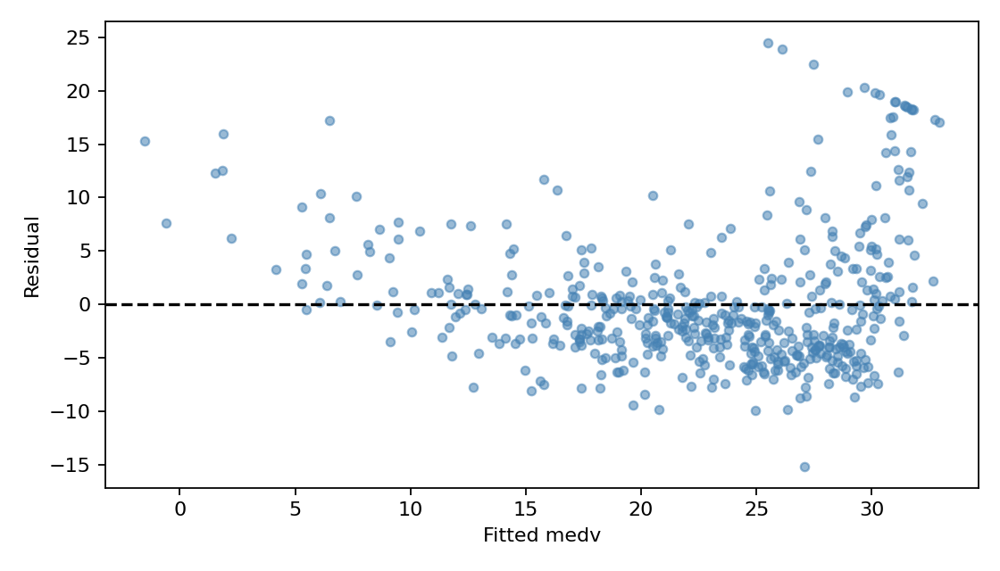

代码 3.6.2-07 · 残差诊断
按完整 Notebook 的顺序运行；本块可能依赖前面的变量。3.6—3.7包含教材真实数据与模拟实验；全样本统计分析不等于独立测试评估。
逐步读代码
fittedvalues 是每行拟合值，resid 是y减拟合值。axhline(0) 添加零残差参考线。持续弯曲提示均值函数形式问题；漏斗形提示方差可能随输入变化。残差不是不可观测真实误差；残差和为0也不能保证模型正确。
实际运行输出
No text output. See the figure or explanation below.
